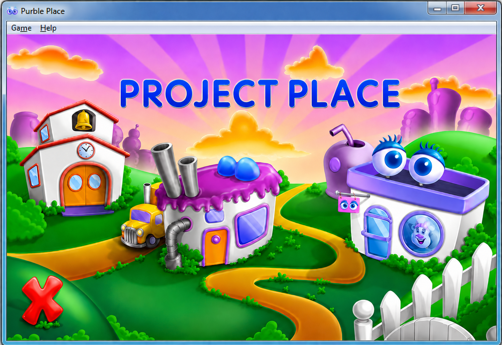

VibeGit - A Social Collaboration Platform for Sharing, Remixing, and Building Projects
React 18, Node.js, Express, Mongoose, JWT, Multer, Framer Motion, and Canvas API
Developed and deployed a full-stack MERN application with JWT-based authentication, combining social media and version control concepts so users can share and discover projects.
Imagine Instagram and GitHub had a baby, and it grew up to become a hangout spot for developers. That's VibeGit!
It's a social platform where developers can share their projects, code snippets, ideas, and little coding experiments without the pressure of being perfect. You can explore what others are building, follow creators, interact with posts, remix projects, and even find people to collaborate with through sync requests.
Whether you're a seasoned coder or someone just starting out, VibeGit is all about connecting, creating, and discovering.
Less gatekeeping, more creating. Come for the code, stay for the vibes!
AI-powered Legal Document Analyzer
FastAPI, Python 3.13, Groq API (LLaMA 3.3), LangChain, LangGraph, ChromaDB, Sentence Transformers, spaCy
Built and deployed a FastAPI + ChromaDB pipeline to extract, segment, and classify legal clauses from PDFs using spaCy NER and Groq’s LLaMA 3.3 and enforced semantic similarity scoring with Sentence Transformers to detect clause deviations against gold-standard templates. Integrated LangChain + LangGraph for multi-step agentic analysis with redline suggestion generation
Ever wished you had a legal expert who could read through pages of complicated contracts and actually tell you what to watch out for? That's LegalLens!
It's an AI-powered legal document analyzer designed to make understanding contracts a little less intimidating. Upload a document, and LegalLens gets to work identifying risky clauses, highlighting potential red flags, comparing them against legal templates, and suggesting possible improvements.
Built using NLP, RAG, and LLM technologies, it turns lengthy legal documents into insights that are easier to understand and act upon.
LockedIn – AI-Powered Chrome Productivity Tracker
JavaScript, Chrome Extension APIs, Groq API, Chrome Local Storage, HTML, CSS, JavaScript
A Chrome extension that keeps tabs on your browsing habits (quite literally). It tracks time spent across websites, uses Groq AI to classify YouTube videos as educational or entertainment, and generates daily productivity scores, rankings and personalized insights. Think of it as a little reality check for your screen time — minus the sugarcoating
Post-Quantum Security Framework for Secure Electric Vehicle V2X Communication
C++, liboqs, ML-DSA, ML-KEM, Falcon, SPHINCS+
Contributed to a custom-built C++ vehicular network simulator with a liboqs backend to evaluate NIST post-quantum algorithms (ML-DSA, Falcon, SPHINCS+, ML-KEM) in a 50-vehicle V2X configuration.
Our research explores the application of Post-Quantum Cryptography (PQC) in Vehicle-to-Everything (V2X) communication, addressing the growing need for quantum-resistant security in connected and autonomous vehicle networks.
We developed a simulation environment to evaluate and compare cryptographic algorithms such as ML-KEM, ML-DSA, Falcon and SPHINCS+, focusing on their computational performance, memory requirements and communication overhead. The study also examines security against potential threats such as replay attacks and message tampering.
Going to be in the papers very soon! Stay Tuned!